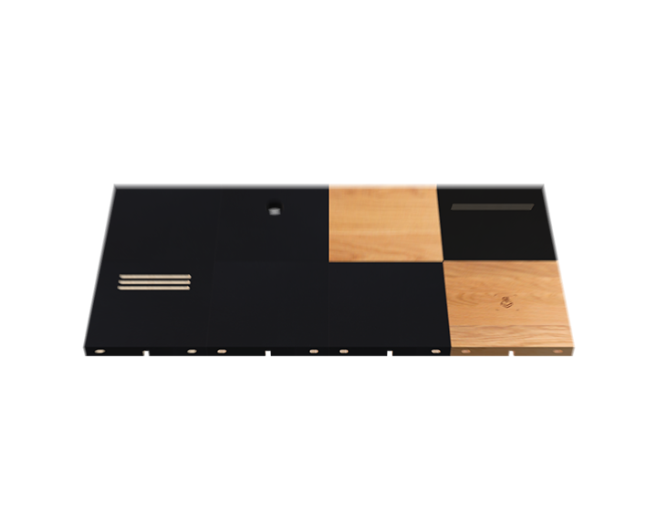
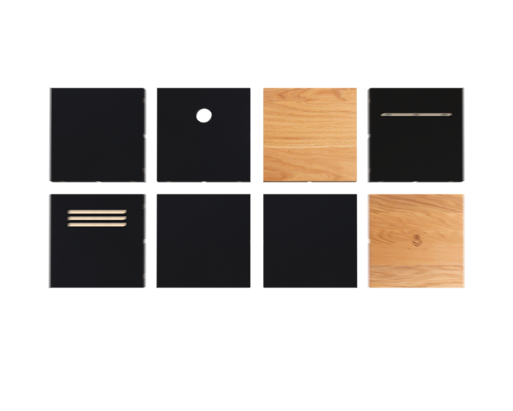
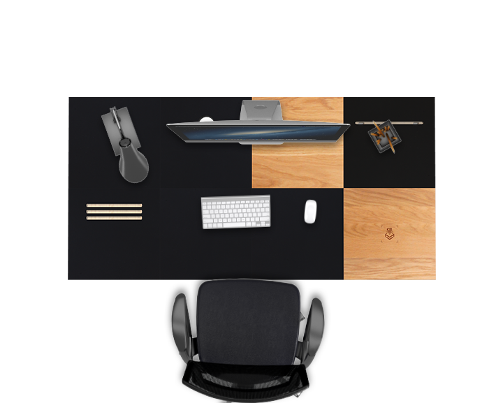
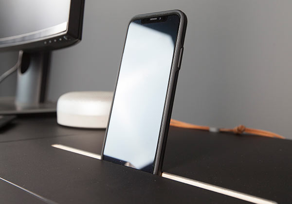

The first truly modular
desk system.
We combine utility, craftsmanship and perfectionism to
create the
only desk that gives you absolute freedom in organizing,
upgrading and changing your workspace. With various models of
modules
with different functionalities available, you can create a
surface that works the best for your needs.

Easy to assemble. Rock solid.
Modulos surface is comprised of Modules - surface tiles each
capable of being connected to another one in any direction
providing you with infinite possibilities.
We have refined a super-simple, yet absolutely stable connection
system for the modules, which makes assembly a breeze. The only
tool you need is a hex key - which is included in your module's
box. Simply connect the modules with wooden pins, fasten them
together with a simple screw system and you're ready to go! And
the desk, of course, holds weight just as any other desk would!

Adapts to any space - even
when the space changes.
Not only can you configure your perfect desk surface (and legs)
- you can reconfigure it! We are fully aware that in todays world
peoples needs change over time, new gear and new job
requirements ask for a change in your setup. But why should you
buy a new desk just to have your perfect setup again? With
Modulos, you can reconfigure it!
Do you want to expand your surface? Add more modules! Do you
like a new feature we offer? No need to throw away your old
desk - with Modulos, upgrade it by replacing just one module!

Cool features embedded in your
desk surface.
Our different models of modules offer you different functionalities.
Do you want to use your iPad as a second screen? Dock it right in
your desk surface! Want to rotate the dock towards you? We've
got you covered!
We aimed to bring super practical features to you, and let you
decide where you want to place their respective modules yourself.
Do you put your phone to your right? Put your Qi Wireless
Charging module to the right then! Is your monitor on the left side
of your desk? Put the cabling hole module on the left!
